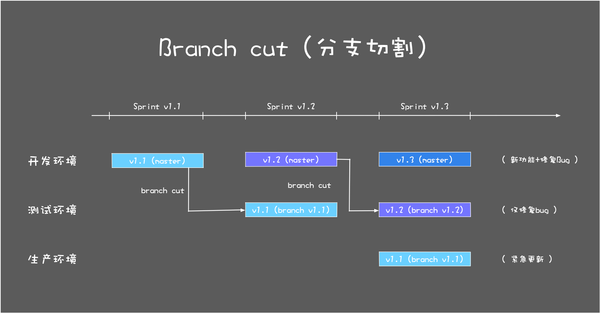
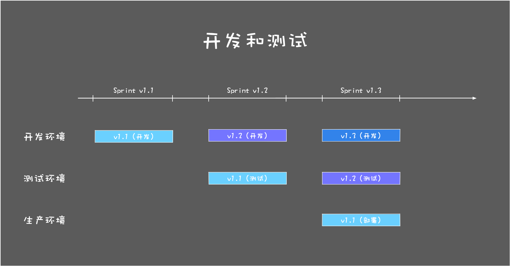

- 00 开篇词 你为什么应该学好软件工程？.md.html
- 01 到底应该怎样理解软件工程？.md.html
- 02 工程思维：把每件事都当作一个项目来推进.md.html
- 03 瀑布模型：像工厂流水线一样把软件开发分层化.md.html
- 04 瀑布模型之外，还有哪些开发模型？.md.html
- 05 敏捷开发到底是想解决什么问题？.md.html
- 06 大厂都在用哪些敏捷方法？（上）.md.html
- 07 大厂都在用哪些敏捷方法？（下）.md.html
- 08 怎样平衡软件质量与时间成本范围的关系？.md.html
- 09 为什么软件工程项目普遍不重视可行性分析？.md.html
- 10 如果你想技术转管理，先来试试管好一个项目.md.html
- 11 项目计划：代码未动，计划先行.md.html
- 12 流程和规范：红绿灯不是约束，而是用来提高效率.md.html
- 13 白天开会，加班写代码的节奏怎么破？.md.html
- 14 项目管理工具：一切管理问题，都应思考能否通过工具解决.md.html
- 15 风险管理：不能盲目乐观，凡事都应该有B计划.md.html
- 16 怎样才能写好项目文档？.md.html
- 17 需求分析到底要分析什么？怎么分析？.md.html
- 18 原型设计：如何用最小的代价完成产品特性？.md.html
- 19 作为程序员，你应该有产品意识.md.html
- 20 如何应对让人头疼的需求变更问题？.md.html
- 21 架构设计：普通程序员也能实现复杂系统？.md.html
- 22 如何为项目做好技术选型？.md.html
- 23 架构师：不想当架构师的程序员不是好程序员.md.html
- 24 技术债务：是继续修修补补凑合着用，还是推翻重来？.md.html
- 25 有哪些方法可以提高开发效率？.md.html
- 26 持续交付：如何做到随时发布新版本到生产环境？.md.html
- 27 软件工程师的核心竞争力是什么？（上）.md.html
- 28 软件工程师的核心竞争力是什么？（下）.md.html
- 29 自动化测试：如何把Bug杀死在摇篮里？.md.html
- 30 用好源代码管理工具，让你的协作更高效.md.html
- 31 软件测试要为产品质量负责吗？.md.html
- 32 软件测试：什么样的公司需要专职测试？.md.html
- 33 测试工具：为什么不应该通过QQ微信邮件报Bug？.md.html
- 34 账号密码泄露成灾，应该怎样预防？.md.html
- 35 版本发布：软件上线只是新的开始.md.html
- 36 DevOps工程师到底要做什么事情？.md.html
- 37 遇到线上故障，你和高手的差距在哪里？.md.html
- 38 日志管理：如何借助工具快速发现和定位产品问题 ？.md.html
- 39 项目总结：做好项目复盘，把经验变成能力.md.html
- 40 最佳实践：小团队如何应用软件工程？.md.html
- 41 为什么程序员的业余项目大多都死了？.md.html
- 42 反面案例：盘点那些失败的软件项目.md.html
- 43 以VS Code为例，看大型开源项目是如何应用软件工程的？.md.html
- 44 微软、谷歌、阿里巴巴等大厂是怎样应用软件工程的？.md.html
- 45 从软件工程的角度看微服务、云计算、人工智能这些新技术.md.html
- 一问一答第1期 30个软件开发常见问题解决策略.md.html
- 一问一答第2期 30个软件开发常见问题解决策略.md.html
- 一问一答第3期 18个软件开发常见问题解决策略.md.html
- 一问一答第4期 14个软件开发常见问题解决策略.md.html
- 一问一答第5期 22个软件开发常见问题解决策略.md.html
- 学习攻略 怎样学好软件工程？.md.html
- 特别放送 从软件工程的角度解读任正非的新年公开信.md.html
- 结束语 万事皆项目，软件工程无处不在.md.html
07 大厂都在用哪些敏捷方法？（下）
你好，我是宝玉，我今天继续与你分享大厂的敏捷方法应用。
在上一篇文章中，我们一起看了一下大厂和敏捷相关的一些流程规范，同时也为你留了一道思考题：
如果每周一个 Sprint，怎么保证每周都有交付，还能保证产品质量？
所以在这一篇中，我们就以每周一个 Sprint 的小项目组为例，看看它的日常是怎么应用敏捷开发的。
一个应用敏捷开发的小组日常
这个小组是做网站开发的，基于微服务负责网站的某一个小模块。标准配置 7 人左右，4 个程序员（至少有一个资深程序员，有架构能力），1 个产品经理（Scrum 里面叫 Product Owner），1 个测试，1 个项目经理（Scrum 里面叫 Scrum Master）。主要负责网站某模块的日常维护。
在分工上：
-
产品经理：写需求设计文档，将需求整理成 Ticket，随时和项目成员沟通确认需求；
-
开发人员：每天从看板上按照优先级从高到低领取 Ticket，完成日常开发任务；
-
测试人员：测试已经部署到测试环境的程序，如果发现 Bug，提交 Ticket；
-
项目经理：保障日常工作流程正常执行，让团队成员可以专注工作，提供必要的帮助，解决问题。
在敏捷开发框架下，已经形成了一些很好的敏捷实践，这个小组也是基于 Scrum 方法做过程管理，基于极限编程做工程实践，看板可视化。每周一个 Sprint。
- 如何完成需求和修复 Bug？
这个小组的日常工作，也是围绕 Ticket 来开展的。所有的需求、Bug、任务都作为 Ticket 提交到项目的 Backlog，每个 Sprint 的任务都以看板的形式展现出来。
每个人手头事情忙完后，就可以去看板上的“To Do”栏，按照优先级从高到低选取新的 Ticket。选取后移动到“In Progress”栏。
- 每周一部署生产环境
没有人愿意星期五部署，那意味着如果部署后发现故障，可能周末都没法好好休息了。所以即使程序早已经测试好了，除非特别紧急，否则都会留在下一周再部署。所以部署放在上半周，这样后面遇到问题还有足够的时间去应对。
部署很简单，按照流程执行几个命令就可以完成生产环境部署。部署完成后，需要对线上监控的图表进行观察，如果有问题需要及时甄别，必要的话对部署进行回滚操作。但轻易不会打补丁马上重新上线，因为仓促之间的修复可能会导致更大的问题。
像敏捷开发这样一周一个 Sprint 的好处之一就是，即使这一周的部署回滚了，下周再一起部署也不会有太大影响。
- 每周二开迭代回顾会议，总结上个 Sprint
每周二的早上，这个小组一般还会预留一个小时的时间，因为常规的站会完成后，还有一个迭代回顾会议 (Sprint Retrospective) 会议，目的是回顾一下在迭代中，团队有哪些做的好的地方，有哪些做的不好的地方。
对于需要后续改进的，需要创建相应的 Ticket，加入到 Backlog 中，在后续迭代中改进完善。
例如会议上，测试人员反馈说，上一个 Sprint，开发人员上线前几个小时还往预部署的分支里面更新代码，导致测试需要重新做回归测试，但因为时间不够了，没来得及测试完整，导致上线后不稳定，建议以后不要随意在上线前，在部署分支更新代码。
对于这样的问题，可能不止一次发生，说明流程上还是存在问题。所以最后大家商定，以后如果不是紧急的修复，就不要在预部署的分支上更新，确实要加，需要和测试先确认。
如果会议中要形成涉及项目的决策，最好是通过集体表决的方式决策，尽可能避免独裁式决策。因为敏捷的原则之一是要善于激励项目人员，给他们以所需要的环境和支持，并相信他们能够完成任务。
- 每周四迭代规划会，计划下周工作
每周四早上，也需要一个小时来组织会议。因为常规站会完成后，还有一个迭代规划会（Sprint Planning Meeting）。这个会议是要大家一起讨论下一个 Sprint 的内容。
在开会之前，产品经理和项目经理会商量好 Ticket 的优先级，会议上，大家一起按优先级从高到低的顺序，从 Backlog 中选出下个 Sprint 的内容。
团队每个成员都要对候选的下个 Sprint Backlog 中的 Ticket 从 1-5 分进行打分，1 分表示容易 1 天以内可以完成的工作量，2 分表示 2 天内可以完成的工作，5 分表示非常复杂，需要 5 天以上的工作量。
这里需要注意，打分时，要大家一起亮分，而不是挨个表态，不然结果很容易被前面亮分的人影响。
评估每条 Ticket 工作量的大概流程如下：
-
会议组织者阅读一条 Ticket，可能是用户故事，可能是 Bug，可能是优化任务。同时会询问大家对内容有没有疑问。
-
大家一起讨论这个 Ticket，确保充分理解这个 Ticket。
-
每个团队成员在心中对 Ticket 进行工作量估算。
-
会议组织者确认大家是否都已经确定估算结果，确认后，开始倒数：“3，2，1”，大家一起伸出一只手，亮出代表分数的手指头。
-
如果估算结果存在分歧，出分最高的和最低的各自说明理由，讨论后达成一致。
这种估算工作量的方法有个名字叫估算扑克，因为亮分时用扑克牌亮分而得名，但并非一定要用扑克牌。
用这种方式评估工作量有几点很明显的好处：
-
**大家积极参与，详细了解需求。**相比以前，可能只有当某个功能模块分配到自己头上的时候，才会去详细了解那部分需求，而其他开发人员可能都不了解这部分需求。
-
**工作量是由实际参与开发的成员作出评估，往往更准确也更容易被接受。**以前项目经理代为估算的模式，很容易不准确，或者让开发人员抵触。
-
**促进成员的交流和经验分享。**我们知道一般经验浅的新手估算工作量都会偏乐观，而经验丰富的老手则会更准确，通过这种方式，新手可以向老手学习到很多工作量估算甚至技术实现的经验。
所以，在经过几个 Sprint 的磨合后，一般一个团队在每个 Sprint 的产出是比较稳定的。比如说这样一个 7 人的小团队，一个 Sprint 预计可以完成 20-30 分的 Ticket。
- 每周五分支切割
周五标志着一周的工作要结束了，所以下班之前（4 点左右），要做 branch cut（分支切割），也就是要把当前主干上的代码，克隆到一个分支（branch）上。
为什么要做分支切割这一步操作呢？
经过一周的开发，master （主干）已经合并了不少新的 PR（Pull Request，合并请求），但是如果你直接把 master 的代码部署到生产环境，肯定还是不放心，毕竟自动化测试还是不能完全代替专业测试人员的测试。
所以我们需要把 master 上的代码部署到测试环境进行测试，并且对测试出来的 Bug 进行修复，直到稳定下来为止。由于 master 还需要一直合并新的功能，所以最好的方式就是每次 Sprint 结束，从 master 创建一个分支版本出来，然后基于这个分支部署和修复 Bug。
所以需要基于主干做一个 branch cut，创建一个预部署的分支，将预部署分支的代码部署到测试环境，这样在下周，测试人员就可以测试新的版本。测试验收通过后，预部署分支的代码会部署到生产环境。

- 每周轮值
小组里面除了日常开发工作以外，其实还有不少琐碎的事情，比如每周部署生产环境，每天部署测试环境，每周的 branch cut（分支切割），回答其他小组的问题，主持每日会议（不一定需要项目经理），这些事情如果都是一个人做难免会有些枯燥。
在敏捷开发中，鼓励发挥每个成员的主动性，所以每周轮值是一个不错的方式，可以让每个人都有机会去体验一下，帮助团队完成这些事情，更有集体荣誉感和责任感。
一些问题解答
上面只是选取的一个项目小组的日常，所以估计你看完还会有些疑问，在这里我把可能的问题列一下，先行解答一下。
- 基于这种敏捷开发的方式加班多吗？
其实加不加班，绝大部分时候和是不是敏捷开发没关系的，还是看项目组的情况。
通常来说，基于敏捷开发一个 Sprint、一个 Sprint 迭代，节奏还是比较稳定的，这个 Sprint 做不完的任务也可以顺延到下个 Sprint，不影响发布。不像瀑布模型那样前松后紧，后期加班可能性大一些。
- 一周一个迭代怎么保证质量？
以前我在使用迭代模型开发时，一般是 4 周左右的迭代周期，2 周就是极限了，所以最开始看敏捷开发用 1 周的迭代周期，心中也有疑惑，1 周时间又要开发又要测试，怎么保证质量？
实际实践下来，发现 1 周一个 Sprint 确实可行，而且质量也可以有保障，这里面有几个因素：
（a） 有足够比例的自动化测试代码，可以很好地保证质量。当用户的主要功能都通过自动化测试覆盖时，基本可以保证主要功能流程不会出问题。
（b） 一个 Sprint 开发完成后，并不马上部署生产环境，而是先部署到测试环境，会有 1 周时间测试。
（c） 有专业的测试人员进行测试，并非完全依赖自动化测试。有时候一些大的功能更新，甚至会组织全组成员一起测试，以弥补测试人员不足的情况。
在一个 Sprint 开发结束后，并不马上部署生产环境，而是先部署测试环境测试。

也就是说，虽然是 1 周的 Sprint，但是其实还有 1 周的时间进行测试。每个 Sprint 不仅开发新功能，还要同步修复以前版本的 Bug。
这样基本上可以保证有好的质量。而且这种 1 周的迭代，可以保持每周都有内容更新，还有个好处就是每周更新的内容不多，出现问题的话，很容易就定位到是什么地方导致的问题。
- 基于敏捷开发如何做计划？
大厂里面通常会在上一年底确定第二年整年的大的开发计划，并确定上线的时间范围，每个季度再根据情况做一些调整。
这些大的计划最终会变成具体的开发任务，一个大的开发任务，会分拆到各个部门，各部门再将任务分拆到各个项目组。基于敏捷开发的话，主要就是看把这些开发任务放到哪几个 Sprint 去做，并且确保在规定的时间范围内完成。
至于工期的估算，在迭代规划会上会对每个 Ticket 进行打分，根据分数可以预估有多少工作量，要花多少时间。
- 如何沟通协作？
组和组之间的沟通协作，主要通过邮件、会议、内部沟通工具，最终任务会以 Ticket 的形式体现。
团队内部的话，因为都在一起，所以沟通起来很方便，每天站立会议都是很好的沟通方式。
在敏捷开发中，有一种实践叫结对编程，就是两个程序员在一台电脑上一起工作。这个一直争议比较大，但是如果用来两人一起排查一些问题，或者是资深程序员带新手程序员，则是一种非常好的协作方式。
- 上面介绍的实践案例和标准 Scrum 有什么不同？
我上面介绍的内容，确实和标准的 Scrum 有不少不一样的地方。
首先是角色名称不一样，在 Scrum 里面是分 Product Owner、Scrum Master 和 Team 三种角色，而在这个案例中是产品经理、项目经理和团队成员，但其实只是名字叫法不一样。
还有要注意一点，就是传统的项目经理，会是偏控制型角色，Scrum Master 则更多是一种服务型的角色，主要职责是保障敏捷流程的执行，以及提供必要的帮助，很多团队的决策就是采用集体决策的方式。
另外，Scrum 有四种会议，除了前面介绍的三种：每日站会（Daily Scrum）、Sprint 计划会（Sprint Planning）和 Sprint 回顾会议（Sprint Retrospective），其实还有一种会议是 Sprint 评审会（Sprint Review）。
Sprint 评审会的作用是让客户审查 Sprint 的完成结果。因为上面这个小组并没有直接的客户，都是完成产品经理提交的需求，而且沟通紧密，所以没有安排专门会议。
这个小组的站立会议并不是“标准”的站立会议，Scrum 的站立会议通常只有 15 分钟，并且只有轮流发言环节。
这里增加的每天审查 Ticket 环节，主要是为了将优先级高的 Bug 修复之类的 Ticket 放到当前 Sprint，及时响应，及时处理。有的项目组没有这个环节，是由测试人员或者 Scrum Master 直接将 Ticket 放到看板。
这个小组并没有使用用户故事来开发需求，而是由产品经理事先写好需求文档。在上一篇文章里面，提到了 Scrum 采用用户故事的方式，分拆需求，减少繁重的需求文档，在实现的过程中再沟通确认需求。
这是 Scrum 推荐的一种方式，也是一种高效的方式，但并不代表这是唯一的方式。如果有产品经理，可以提前几个 Sprint 就将需求文档写详细，一样可以达到高效的理解需求的效果。
那么这样还算敏捷开发么？
其实在《05 敏捷开发到底是想解决什么问题？》就有讲过，是不是敏捷开发，核心并不是应用了哪个方法，而是应用的时候，是否遵循了敏捷开发的价值观和原则。
比如说非标准的站立会议效率更优，那么就应该采用非标准的站立会议；如果有专业产品经理事先做好需求分析，可以达到解释清楚需求的效果，就没必要一定要用用户故事来理解需求。
总结
上一篇文章我们讲了大厂里和敏捷相关的一些流程规范，这一篇又讲了一个小组是怎么应用敏捷开发来开发项目的。
现在看上一篇文章中我留的思考题：如果每周一个 Sprint，怎么保证每周都有交付，还能保证产品质量？想必你已经有了答案。
要保障质量，还是离不开充分的测试，不仅要有自动化测试，还要辅助一定量的人工测试。敏捷开发虽然求快，但是不代表应该牺牲质量。
其实，大厂的敏捷实践并不神秘，关键是分而治之，最终团队小，项目小，所以才可以敏捷起来。大厂会注重流程和工具的应用，通过 Ticket 的方式来管理和跟踪开发任务，通过自动化的方式来部署。
大厂的敏捷实践，一般是基于 Scrum、极限编程和看板，针对各自项目组的特点，会有所侧重有所调整，在遵循敏捷的价值观和原则的前提下，做到高效使用。
希望上面介绍的敏捷应用，能对你理解敏捷开发有所启发，帮助你优化改进日常项目流程。还有要注意的一点就是，没有万能的开发模式，只有适合项目的开发模式，最重要的还是要摸索出一套适合你自己项目特色的开发模式。
限于篇幅，对于 Scrum、极限编程和看板，我并没有展开细讲，还需要大家自己辅助看看书，我在《学习攻略 | 怎样学好软件工程？》和《05 | 敏捷开发到底是想解决什么问题？》文章中也列了一些参考书籍。
留言区有同学推荐的文章《天下武功，唯快不破—新时代敏捷项目管理之道》对敏捷开发也有很不错的讲解，推荐阅读。